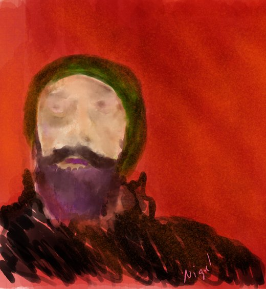

about TripleMonkey Studio
TripleMonkey Studio is focused on iOS design and development, bringing care to both how an app looks and how it works.
I'm Nigel Krajewski. I enjoy turning ideas into experiences that feel intuitive, clear, and easy to use. This site is a place to explore selected projects and see the thinking behind the screens, from shaping an app's experience to building it for iOS.
My DIY style, detail-oriented design, and problem-solving have guided me on a journey of continued learning, in software and in other art mediums too.
Take a look around, and get in touch if you're working on an app idea or looking for a creative development partner.